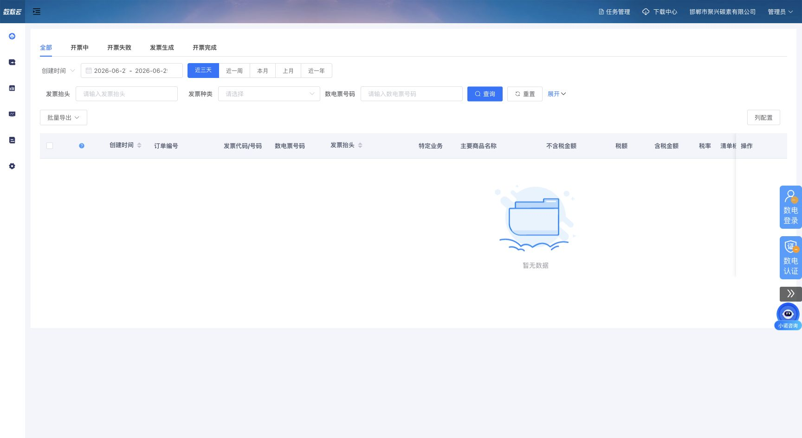
开票记录
销项管理 / platform-records
Tax Cloud P0 Clone & ERP Acceptance Console
本页只承载非手工开票 P0 页面。手工开票票面已经可用并冻结为基线，后续只补额度、税编、客户库、场景模板接口和回归保护。

销项管理 / platform-records
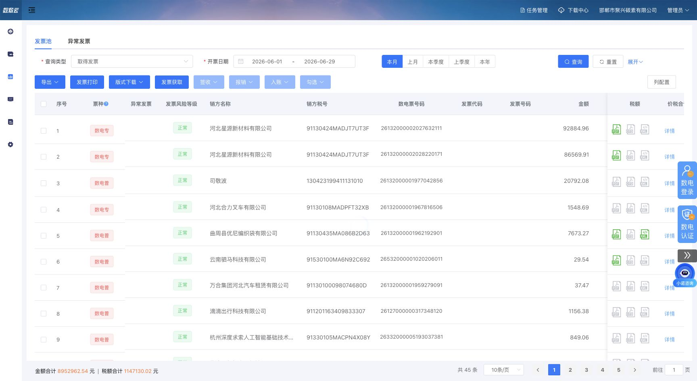
票据中心 / billCenter-fullInvoiceQuery
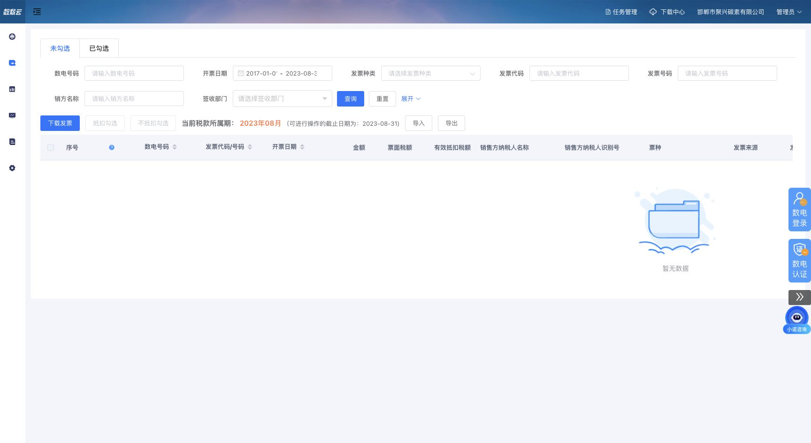
进项管理 / income-invoiceCheck
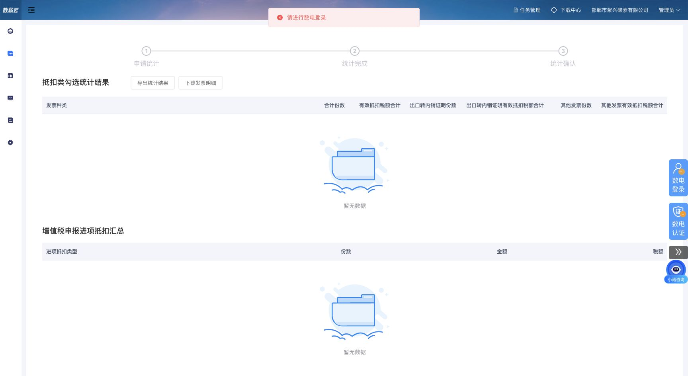
进项管理 / income-confirmSign
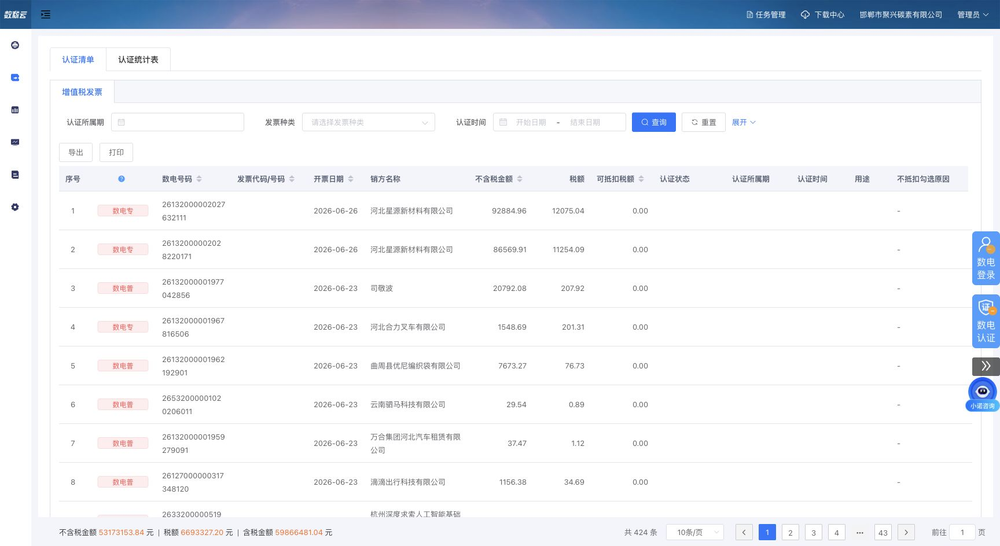
进项管理 / income-certificationResults
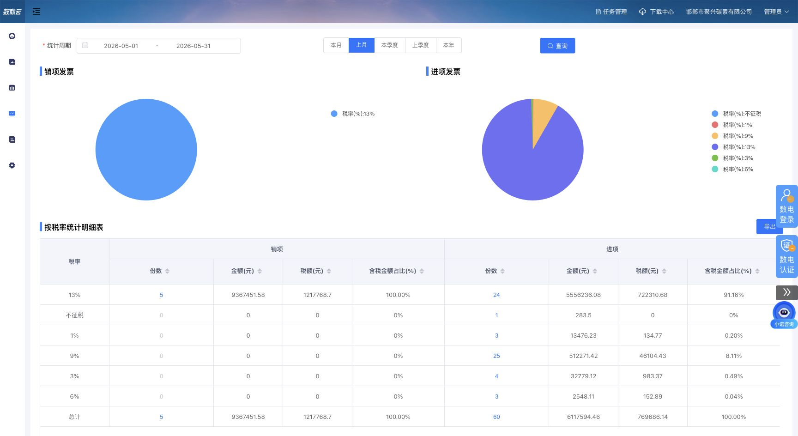
分析看板 / analysisBoard-invoceRateView
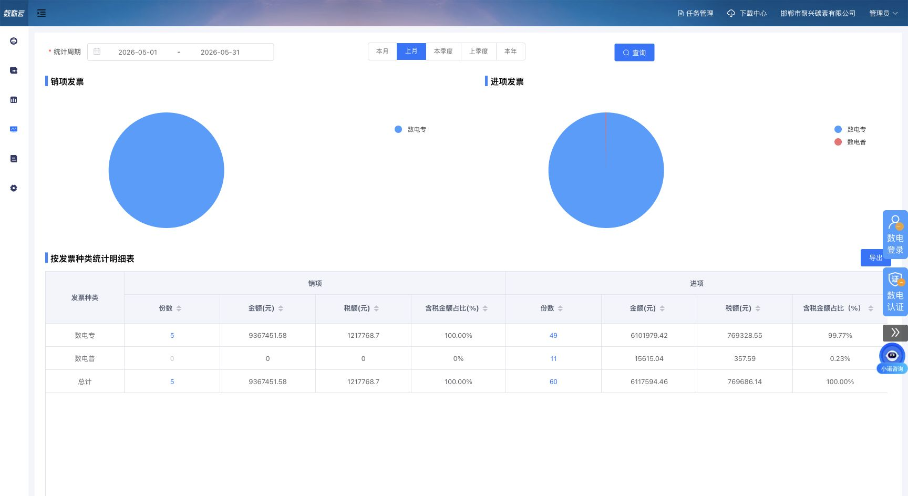
分析看板 / analysisBoard-invoiceTypeView
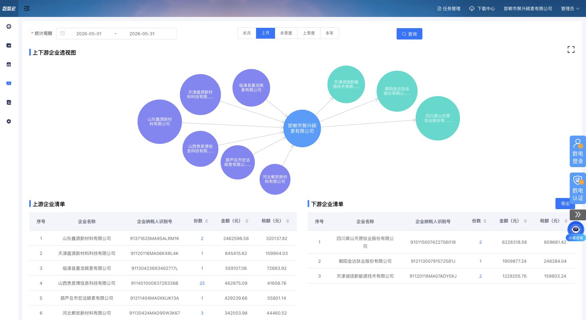
分析看板 / analysisBoard-businessRateView
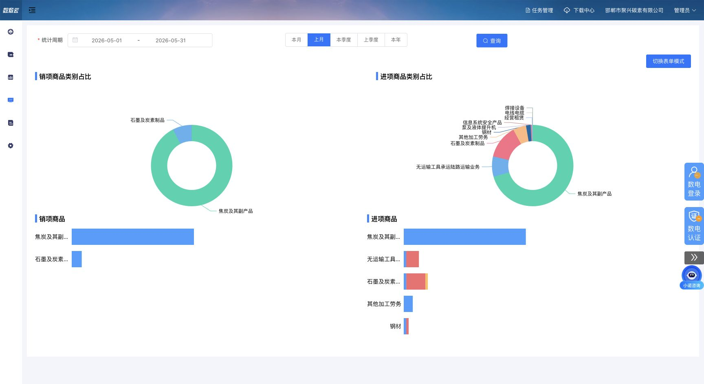
分析看板 / analysisBoard-goodsRateView
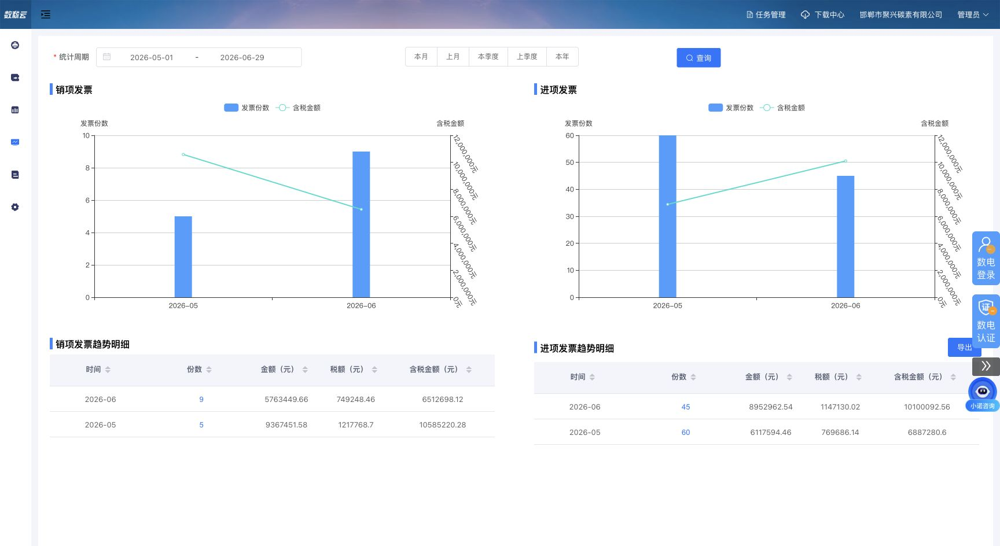
分析看板 / analysisBoard-purchaseSalesTrend
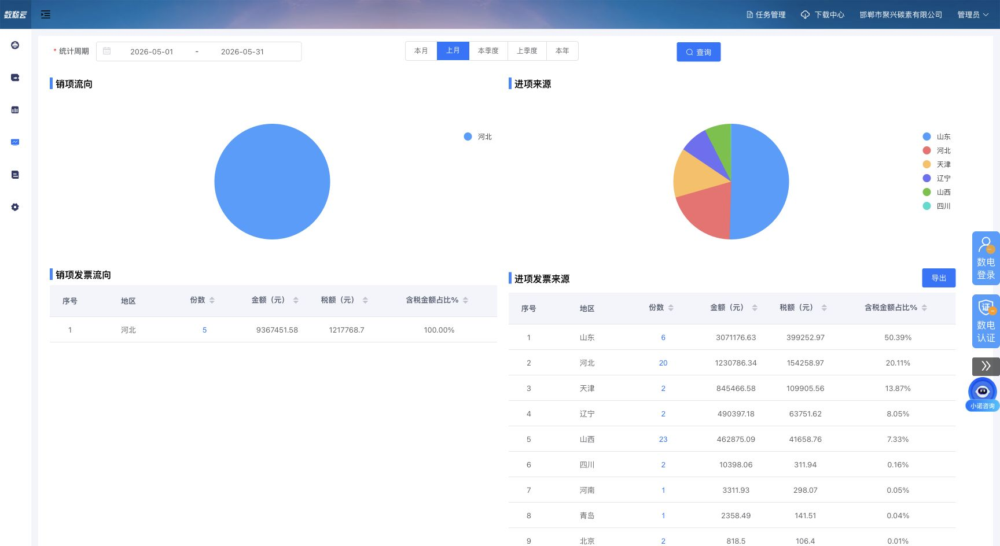
分析看板 / analysisBoard-invoiceRegionView
| 验收项 | 已完成 | 继续执行 |
|---|---|---|
| 页面完整性 | 33 个页面截图、raw、visible DOM 已齐 | 补弹窗、抽屉、有数据态、错误态 |
| P0 页面结构 | 11 个非手工 P0 page spec 已齐 | 从静态 demo 进入 ERP 组件化 |
| 接口动作 | P0 动作矩阵已列风险等级 | Chrome Network 逐按钮实抓 |
| 业务融合 | ERP / 数税云 / 金蝶职责边界已定 | 逐字段血缘和 adapter 落地 |
| 高风险动作 | L3/L4 已默认禁用 | 单独审批、审计、幂等、门禁设计 |
| 优先级 | 页面 | key | 当前状态 | 下一步 |
|---|---|---|---|---|
| P1 | 扫码开票 | platform-scanCode | page spec done | 补二维码/链接/失效状态 demo 和 Network |
| P1 | 扫码记录 | platform-scanRecords | page spec done | 补列表、详情、导出动作 |
| P1 | 订单开票 | platform-billIssue | page spec done | 和 ERP 待开票合同缺口台账对齐 |
| P1 | 开票申请单 | platform-invoiceApplication | visual-only spec done | 只保留视觉参考，不恢复旧申请主线 |
| P1 | 红字确认单 | platform-redMark | page spec done | 查询台账先行，L3 红字动作后置 |
| P1 | 快捷勾选 | income-scanCodeCheck | page spec done | 补 L3 门禁和批量确认 |
| P1 | 勾选审核 | income-confirmCheck | page spec done | 补批次审核/撤销动作 |
| P1 | 签收 | billCenter-sign | page spec done | 先展示签收状态，真实签收后置 |
| P1 | 查验 | billCenter-invoiceVerification | page spec done | 补查验表单、批量查验、失败态 |
| P1 | 取票设置 | billCenter-accessSetting | page spec done | 补配置白名单和同步任务映射 |
| P1 | 任务管理 | billCenter-taskManagement | page spec done | 补重试、失败明细、下载结果 |
| P1 | 下载中心 | downloadCenter | page spec done | 补文件下载、过期、权限不足态 |
| P2 | 商品信息 | bussiness-info | page spec done | 补商品税编映射 |
| P2 | 客户管理 | bussiness-customer | page spec done | 补 ERP/金蝶/数税云客户资料血缘 |
| P2 | 开票额度配置 | bussiness-credit | page spec done | 补额度配置和开票页额度展示闭环 |
| P2 | 配置管理 | bussiness-configurationManagement | page spec done | 筛选进入 ERP 的配置白名单 |
| P2 | 网上办税信息 | system-onlineTaxationInfo | page spec done | 补数电账号安全存储方案 |
| P3 | 组织管理 | system-dept | page spec done | 只做参考，不覆盖 ERP 组织 |
| P3 | 部门管理 | system-departmentInfo | page spec done | 只做参考，不覆盖 ERP 部门 |
| P3 | 角色管理 | system-role | page spec done | 只做参考，不覆盖 ERP 权限 |
| P3 | 用户管理 | system-user | page spec done | 只做数税云账号映射参考 |